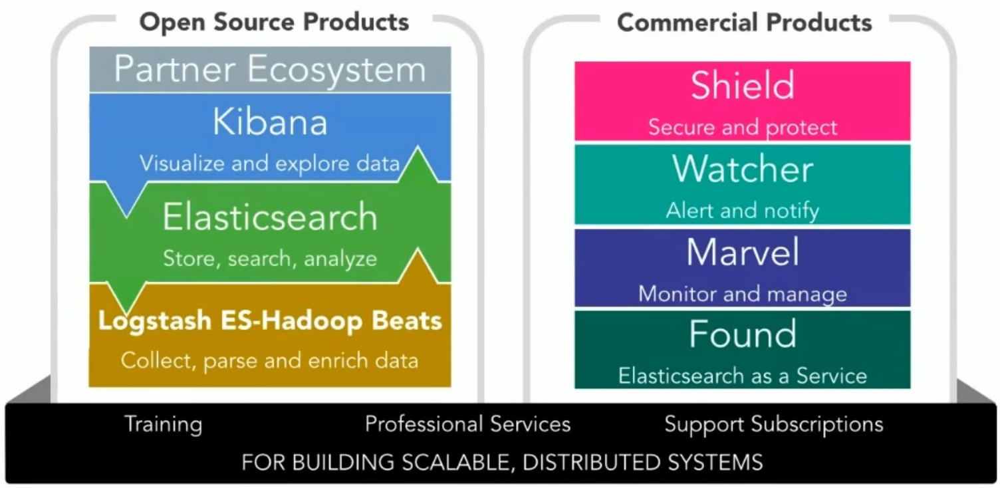

Your browser doesn't support the features required by impress.js, so you
are presented with a simplified version of this presentation.
For the best experience please use the latest Chrome, Safari, or Firefox 10.
Log Management and Analysis

Pourquoi collecter ?

Log - Un lexique de l'écosystème
Big Data : definition
Broker : definition
Inverted index : definition
Machine-generated datas : big data generated by your technology infrastructure, security systems and business application
Machine learning : definition
Operational Intelligence : definition
RegExp : definition
Shipper : definition
Watcher : definition
Machine-generated datas kesako ?
- Log events
- Security events
- Security risks and threats
- Network activity
- Fraudulent activity
- User clickstreams and transactions
- Machine behavior
- Capacity consumption
- Customer experience
- Customer behavior
Qu'est-ce qu'un log ?
195.70.14.162 - - [12/Nov/2015:04:12:18 +1100] "GET /sites/default/files/js/js_33BaXx14mLWwIKRLHiDD1YUISrtmHDN9BKx9c77CeZ0.js HTTP/1.1" 200 826 "https://service-public.nc/" "Mozilla/5.0 (Windows NT 6.2; WOW64) AppleWebKit/537.36 (KHTML, like Gecko) Chrome/46.0.2490.80 Safari/537.36"
- Des formats de dates hétérogènes
- Une structure de champs variable
- Des données non structurées
- Des informations illisibles par un humain
- Un volume très important
- Une visibilité et une analyse impossible en l'état
Machine-generated datas In

Operational Intelligence Out

Turn Machine Data Into Insights

Turn Machine Data Into Insights

Quelles problématiques posées ?
- Collecter les logs de tous le SI : avec une faible empreinte
- Parser la donnée : RegExp avec un minimum de rejets
- Enrichier la donnée : à partir de tables de référence
- Traiter la donnée de masse : tendances, anomalies
- Indexer la donnée : sur la base de mots clef
- Visualiser la donnée hétérogène : de façon très visuelle
- Alerter intelligemment : sur la base de la donnée consolidée
Architecture à scalabilté horizontale
Machine learning à la rescousse

Un échantillon des solutions de log management du marché
- Splunk (payant)
- Logentries (payant cloud)
- Graylog (open)
- Elasticsearch - Logstash - Kibana (open)
- Loggly (payant cloud)
- Sumo Logic (cloud)
- JKool (cloud)
- ELSA (osbolète)
- Logzilla open
- Octopussy (osbolète)
- Scribe (osbolète)

Splunk - La référence
- ...
Splunk - Pros
- Patterns de reconnaissance de logs très performants ex: 100% sur Apache
- Configuration entièrement dans la console web
- Nombreux modèles de données disponibles (CIM: Common Information Model)
- Très bonne assistance à la construction de requêtes : auto-suggestion inteligente
Splunk - Cons
- Console web pas toujours très intuitive : agregation (sum) difficiles à trouver, fonction avancer comme GeoIP non trouvée
- Trop monolithique
- Prix excessif
- Apps (plugin) : peu robustes
- Useragent pas optimisé et inopérant

Graylog - Présentation
- ...
Graylog - Pros
- ...
Graylog - Cons
- Pas du tout intuitif
The Elastic Product Portfolio

ELK stack - Pros
- Architecture très scalable, flexible et modulaire
- Système très ouvert
- Chaque brique adresse une fonction très spécifique
- Compétences exploitables dans d'autres cas d'utilisation
- Très grande communauté et adoption
- ES : Ecosystème dynamique, nombreux outils autour de ES
- ES : très performant, robuste, scalable, très rapide
- Logstash : filtres intégrés bien pratiques : geoip, useragent
- Kibana : facile à prendre en main, intuitif
- Kibana : Plage temporelle facile d'utilisation
ELK stack - Cons
- Difficile de trouver des configurations toutes faites
- Configuration à réaliser soit même
- Configuration manuelle pour la collecte
- Patterns groks ne couvrent pas tous les cas ex pour apache ou 5 logs sur 5888 passent au travers à cause d'un problème de parsing
- Certaines fonctions clef sous licence : gestion des accès, gestion des watchers
QSOS - La méthode d'évaluation
- ..
Les critères d'évaluation - les critères généraux
- D - pérennité de la solution / obsolescence
- Faibles coûts
- Open source
- Equipe de développement active
- Visibilité de la roadmap et de l'issue tracker
- Forte communauté
- Qualité de la documentation
Les critères d'évaluation - les critères fonctionnels
- Facilité d'installation et de maintenance
- Facilité de prise en main des outils
- Autonomie des utilisateurs pour l'analyse
- Gestion des accès
- Génération d'alertes
- Version mobile ?
Les critères d'évaluation - les critères techniques
- D - self hosted
- Low latency
- Scalabilité
- Real time
- Modularité
- Interopérabilité, archi woa ?
- Polyvalance
- Container fiendly ?